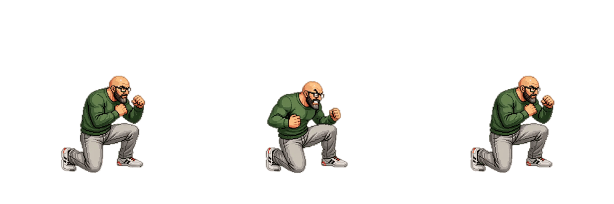
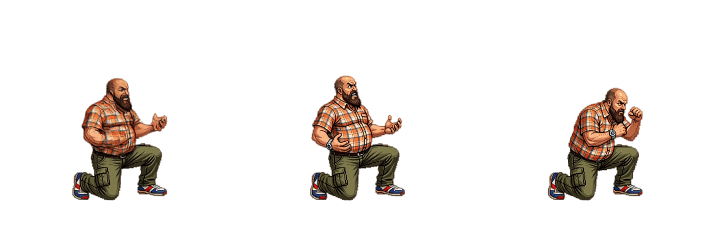
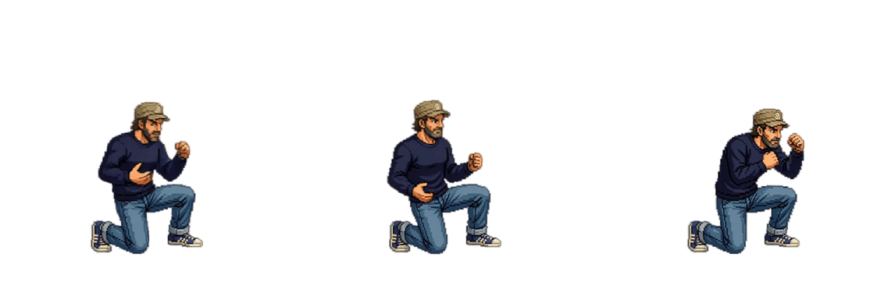
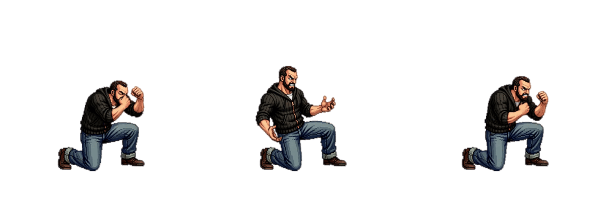
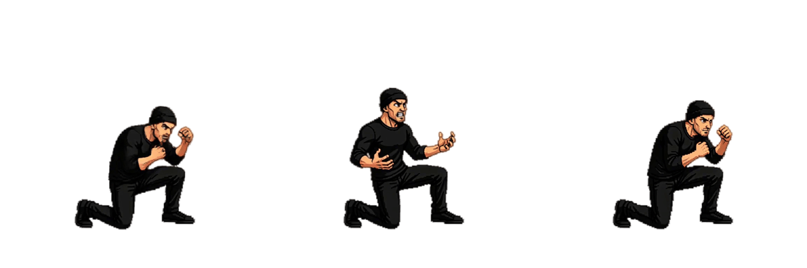
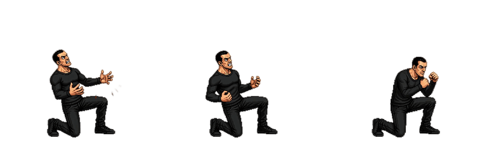
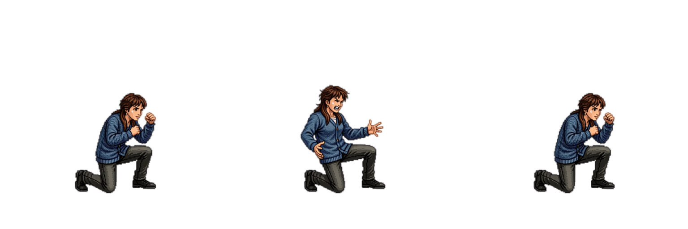
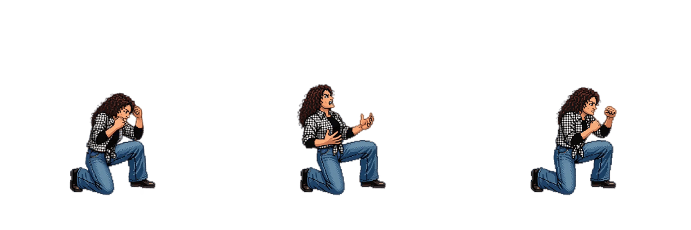
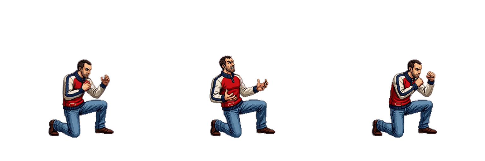

Apri Hurt da accovacciati nella demoTiming Hurt da accovacciati
Aggiornato il 2026-11-21. Nove personaggi; ogni animazione dura 500 ms (0,5 s) a velocita 1x. FPS e durata del singolo frame compensano il numero di celle di ciascun taglio.
Riproduzione solo avanti della reazione e del recupero presenti nello spritesheet. Le immagini mostrano inizio, meta e fine del taglio, senza indicare un impatto sincronizzato. Loop e CRT attivi nella demo. La posa di riferimento e la guardia accovacciata.
Preferite le versioni trimmed salvate su AutoSprite. Indici sorgente da zero nello spritesheet selezionato; nessun offset dedotto dal parent. Pixel RGBA, dimensioni 512x512 e padding conservati senza ridimensionamenti. In Godot usare gli atlas e le durate per frame.
Scarica CSV
| Personaggio | Inizio / meta / fine | Intervallo / sorgente | Frame | FPS | Durata frame | Durata ciclo | Provenienza |
|---|
| ALBERTO |  | 0–11 / 12 | 12 | 24 | 41.667 ms | 500 ms | Hurt Crouched
cmwq5rx2d00d2gtuwf9jh6sx9
Atlas |
|---|
| FABIO-CLARA |  | 0–11 / 12 | 12 | 24 | 41.667 ms | 500 ms | Hurt Crouched
cmwq5wwzc007qhsldxalxpj78
Atlas |
|---|
| SBOZ |  | 0–8 / 9 | 9 | 18 | 55.556 ms | 500 ms | Hurt Crouched
cmwq6b288001z13sfbbwcoquh
Atlas |
|---|
| PIPPO |  | 0–20 / 21 | 21 | 42 | 23.810 ms | 500 ms | Hurt Crouched
cmwq67cau001mgbgp9kt9b92d
Atlas |
|---|
| PEPPO |  | 0–12 / 13 | 13 | 26 | 38.462 ms | 500 ms | Hurt Crouched
cmwq65kir000s13sfmgvtqsfw
Atlas |
|---|
| Oscar |  | 0–9 / 10 | 10 | 20 | 50.000 ms | 500 ms | Hurt Crouched
cmwq5bi5h0073ayq4iw4f0ats
Atlas |
|---|
| Elisa |  | 0–12 / 13 | 13 | 26 | 38.462 ms | 500 ms | Hurt Crouched
cmwq5uyjo00f4gtuwh2bky3hh
Atlas |
|---|
| FRA-TAVARONE |  | 0–13 / 14 | 14 | 28 | 35.714 ms | 500 ms | Hurt Crouched
cmwq6081e009rhsldufe3hc07
Atlas |
|---|
| MARSAN |  | 0–16 / 17 | 17 | 34 | 29.412 ms | 500 ms | Hurt Crouched
cmwq61zzk00bnayq4q3nql1me
Atlas |
|---|